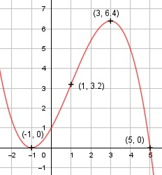

Aufgabe 29 f(x) = - 0,2x3 + 0,6x2 + 1,8x + 1 f'(x) = - 0,6x2 + 1,2x + 1,8, f''(x) = -1,2x + 1,2, f'''(x) = -1,2 Definitionsbereich: -∞ < x < ∞ Wertebereich: -∞ < f(x) < ∞ Asymptoten: - Symmetrie: - Nullstellen: -0,2x3 + 0,6x2 + 1,8x + 1 = 0 |:(-0,2) x3 - 3x2 - 9x - 5 = 0 Durch Probieren gefunden x = - 1. Hornerschema: 1 -3 -9 -5 x1 = -1 -1 4 5 -------------------------- 1 -4 -5 0 Polynomdivision: -0,2x3 + 0,6x2 + 1,8x+1 : (x+1) = -0,2x2+0,8x+1 -(-0,2x3 - 0,2x2) ------------------ 0,8x2 + 1,8x + 1 -(0,8x2 + 0,8x) --------------- x + 1 -(x + 1) --------- 0 x2 - 4x - 5 = 0 p, q - Formel: p = -4, q = -5 x2,3 = x2,3 = 2 ± x2,3 = 2 ± x2,3 = 2 ± 3 x2 = 5 x3 = -1 (Berührpunkt, Extrempunkt) N1,2(-1|0), N3 (5|0) Schnittpunkt mit der y-Achse: f(0) = - 0,2 * 03 + 0,6 * 02 + 1,8 * 0 + 1 = 1 Sy(0|1) Extrempunkte: -0,6x2 + 1,2x + 1,8 = 0 |*(-0,6) x2 - 2x - 3 = 0 p, q - Formel: p = -2, q = -3 x1,2 = x1,2 = 1 ± x1,2 = 1 ± x1,21,2 = 1 ± 2 x1 = 3, f(3) = -0,2 * 33 + 0,6 * 32 + 1,8 *3 + 1 = 6,4 x2 = - 1, f(-1) = 0 f''(3) = -1,2 * 3 + 1,2 < 0 --> Hochpunkt (3|6,4) f''(-1) = -1,2 * (-1) + 1,2 > 0 --> Tiefpunkt (-1|0) Wendepunkt: -1,2x + 1,2 = 0 |+1,2x 1,2x = 1,2 |:1,2 x = 1, f(1) = -0,2 * 13 + 0,6 * 12 + 1,8 * 1 + 1 = 3,2, f'''(1) ≠ 0 --> Wendepunkt (1|3,2) Graph:
